4*4
Страница потерялась
Такой страницы здесь нет — возможно, она была удалена, переименована, или адрес введён с ошибкой.
На главную →
Такой страницы здесь нет — возможно, она была удалена, переименована, или адрес введён с ошибкой.
На главную →